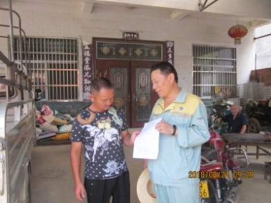

安保区第33号隐患 “一事一档一图”处置记录表
档案编号：漯检-33
建档时间：2018.8.24
| 地点 | 553#墩漯驻区间k863+460 | ||
| 管辖车间、工区 | 漯河西检测工区 | ||
| 责任单位（施工单位、业主、归属地管理单位） | 业主单位： | ||
| 施工单位：个体：私人所建 | |||
| 归属地：驻马店市西平县谭店乡刑店 | |||
| 责任人及联系方式 | 业主单位: | ||
| 施工单位: | |||
| 个 体:吕全红 | |||
| 问题描述 | 问题描述 | 下553#墩漯驻区间k863+460彩钢瓦 | 
隐患照片 |
| 铁路安全保护区范围 | 该处铁路安全保护区30米 | ||
| 风险评估 | 存在彩钢瓦房顶被大风划到线路上 | ||
| 处置过程 | 2018年8月24日职工卢洪平、刘桂中已下发路外安全告知书，并对存在高铁隐患予以告知，让负责人采取安全防护措施 | ||
| 处置结案 | |||
| 后期情况 | |||
漯驻区间555#墩漯驻区间k863+460安保区处置过程记录
2018年8月24日职工卢洪平、刘桂中已下发路外安全告知书，并对存在高铁隐患予以告知，让负责人采取安全防护措施。班组利用巡查进行关注，发现有发展及时上报
漯河西检测工区
附现场照片：